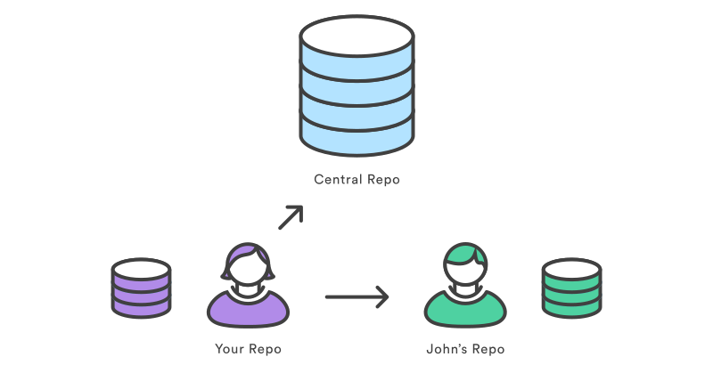

Sitio Oficial: https://git-scm.com/
Versión actual(estable): 2.17.0
Sistema de control de versiones (VCS)
Centralizado

Distribuido

Git
- Sistema de control de versiones distribuido
- Manejo de datos por copias instantáneas, no por diferencias
- La mayoría de las operaciones son locales
Copias por diferencias

Copias instantanéas (git)

Git areas

Comandos
Configuraciones
$ git config --global user.name "Santiago Pernigotti"
$ git config --global user.email santiago@fizzmod.com
$ git config --global credential.helper cache
$ git config --listLas configuraciones globales se guardan en ~/.gitconfig
Iniciar un repositorio
$ git initClonar un repositorio existente
$ git clone http://fizzmod-server/fizzmod/aurora.gitCiclo de vida del estado de los archivos

Rastrear archivos nuevos o Preparar(stage) archivos modificados
$ git add index.jsRevisar el estado de los Archivos
$ git statusVer los cambios no preparados (not staged)
$ git diffVer los cambios preparados (staged)
$ git diff --stagedCommittear los cambios
$ git commit -m "message"Commitear salteando el area de preparación
$ git commit -am "message"Ver el Historial de los commits
$ git log$ git log --all --decorate --oneline --graphRehacer el último commit
$ git commit --amendDeshacer un archivo preparado
$ git reset HEAD index.jsDeshacer un archivo modificado
$ git checkout -- index.jsRepositorios remotos (remotes)
El remote por defecto es origin
Ver los remotes
$ git remote -vModificar url del remote
$ git remote set-url origin http://usuario@fizz.com.ar:8080/fizzmod/sportline.gitTraer datos
$ git fetch [remote]Traer datos y mergear a la branch actual
$ git pull [remote] [branch]Enviar datos
$ git push [remote] [branch]Branches


historial de commits sobre master
Crear una nueva branch
$ git branch testing
Cambiar de branch
$ git checkout testing
Modifico y commiteo en la branch testing
$ nano index.js
$ git commit -am 'made a change'
Vuelvo a master
$ git checkout master
Hago algunos cambios más y commiteo
$ nano index.js
$ git commit -am 'made other changes'
Mergear una branch
$ git merge testing

Listar las branches locales
$ git branch
QA
* master
testing$ git branch -v # muestra el último commit de cada unaVer ramas mergeadas o no con la rama activa
$ git branch --merged$ git branch --no-merged
Remote branches
- Referencias al estado de las branches del remote repo
- Se definen como remote/branch. Ejemplo: origin/master
Listar las remote branches
$ git branch -rListar todas las branches
$ git branch -a